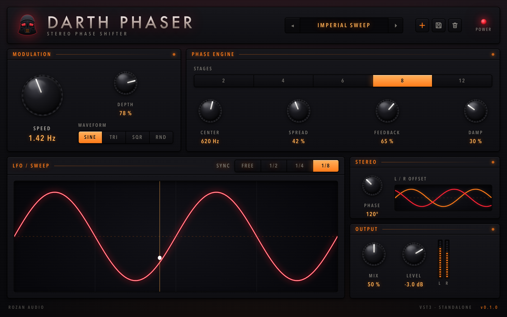

Stereo Phase Shifter
Two to twelve all-pass stages, a tempo-syncable LFO, stereo offset and damped feedback. VST3 and standalone, for macOS, Windows and Linux.

Every build is produced by GitHub Actions from a tagged commit. Browse every version on the releases page. The builds are unsigned, so the first launch needs the extra step below.
Darth Phaser.vst3 into
~/Library/Audio/Plug-Ins/VST3/xattr -dr com.apple.quarantine \ ~/Library/Audio/Plug-Ins/VST3/"Darth Phaser.vst3"
Darth Phaser.vst3 into
C:\Program Files\Common Files\VST3\Darth Phaser.vst3 into
~/.vst3/chmod +x Standalone/"Darth Phaser"
| Control | Range | What it does |
|---|---|---|
| Speed | 0.01–10 Hz | LFO rate, overridden while Sync is on |
| Sync | Free, 1/2, 1/4, 1/8 | Locks the LFO to the host tempo |
| Depth | 0–100 % | Full depth sweeps two octaves either side of Center |
| Waveform | Sine, Tri, Sqr, Rnd | Random is sample and hold, per channel |
| Stages | 2, 4, 6, 8, 12 | Notch count is half the stage count |
| Center | 80 Hz – 5 kHz | Middle of the sweep |
| Spread | 0–100 % | Fans the stages across an octave either side |
| Feedback | −95 – +95 % | Sharpens the notches; negative inverts |
| Damp | 0–100 % | Low-pass inside the feedback path |
| Phase | 0–180° | Offsets the right channel's LFO against the left |
| Mix | 0–100 % | 50 % gives the deepest notches |
| Level | −24 – +12 dB | Output gain |
CMake fetches JUCE on the first configure, so nothing else needs installing beyond a C++20 compiler.
git clone https://github.com/hrozan/darth-phaser.git cd darth-phaser cmake -B build -DCMAKE_BUILD_TYPE=Release cmake --build build